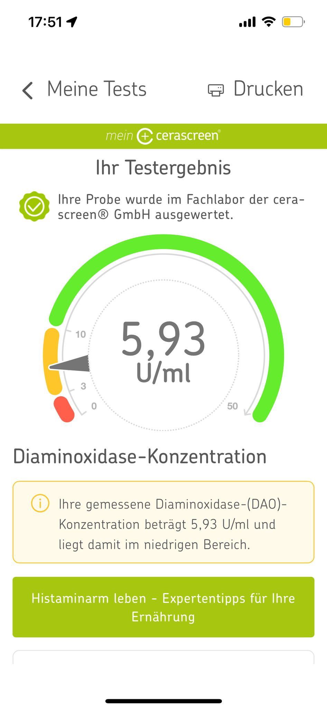

Wo es sich zeigt
📝 Julia trägt hier ihre eigenen Symptome ein.
Die Mastzellen setzen Botenstoffe frei — ohne klaren Auslöser.
Mastzell-Aktivierungs-Syndrom. Symptome überall im Körper. Schwer zu greifen.
MCAS ist keine Allergie. Die Mastzellen setzen Botenstoffe frei — oft ohne klaren Auslöser.
📝 Julia trägt hier ihre eigenen Symptome ein.
📝 Julia trägt hier ihre eigenen Trigger ein.
📝 Julia trägt hier ein was hilft.
📝 Julia trägt hier ihre Sicht ein.
Wie es sich anfühlt
MCAS zeigt sich bei mir mit Übelkeit, Schwindel, Kreislaufproblemen und Bauchschmerzen. Vor allem wenn ich Stress habe, es sehr heiß ist oder ich meine Periode habe, sind meine Symptome verstärkt. Auch durch künstliche Gerüche — wie z.B. Shisha — merke ich es.
📝 Julia füllt hier aus. Aus deiner Sicht. Was war dein Weg zur Diagnose? Welche Ärzte kannten es, welche nicht? Was hättest du dir vom Gesundheitssystem gewünscht? Warum wird MCAS oft übersehen?
Warum schwer zu diagnostizieren

Was Mastzellen sind
📝 Julia füllt hier aus. Kurz und in einfachen Worten. Was Mastzellen tun, warum sie überreagieren können, was das mit Histamin und anderen Botenstoffen zu tun hat. Kein Lehrbuch-Text — die Julia-Version.
Wichtig: Das hier ist meine Erfahrung und mein Verständnis. Keine medizinische Beratung. MCAS wird noch erforscht — für eine Diagnose und Behandlung wende dich bitte an eine spezialisierte Ärztin oder einen Arzt.
📝 Julia füllt hier aus.
Bei mir vermutet, noch nicht offiziell diagnostiziert — Test folgt.
📝 Julia beschreibt den Weg (Tryptase, Methylhistamin im Urin, Ausschlussverfahren).
📝 Julias Sicht dazu, ohne Heilversprechen.
📝 Julias SOS-Strategien.
Fragen zur App, zur Community, zum Blog. Oder einfach so. Ich les alles selbst.
Drei Wege, wie ich dich weiter begleiten kann — such dir aus, was gerade passt.
Verstehen, was in deinem Körper passiert — und erste Schritte Richtung Alltag.
Zum Buch →
★ Kurs12 Wochen Struktur, Wissen und persönliche Begleitung. Mit Buch, Tagebuch, Kochbuch und App.
Zum Kurs →
App · TäglichLebensmittel einfacher einschätzen, Symptome dokumentieren, Zyklus mitdenken.
Zur App →